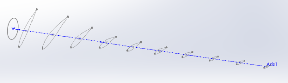
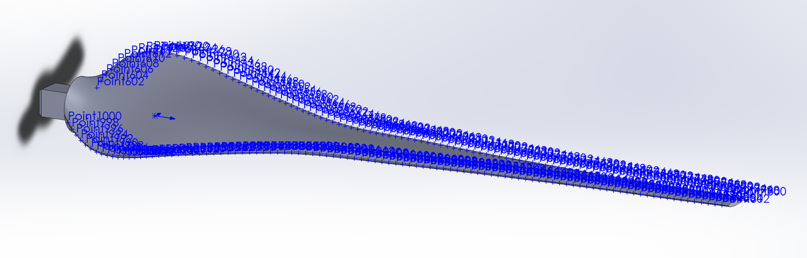
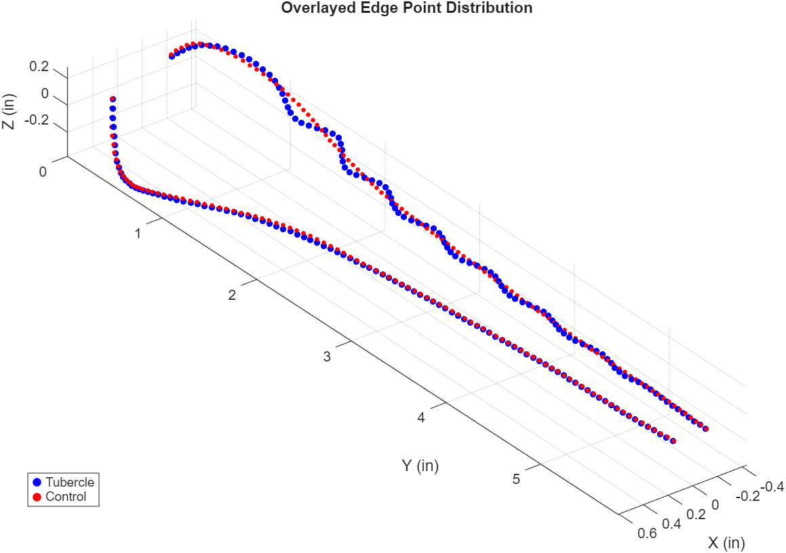
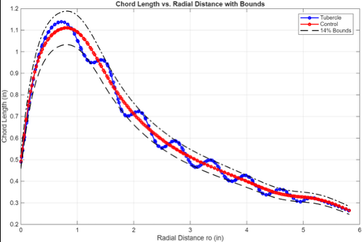
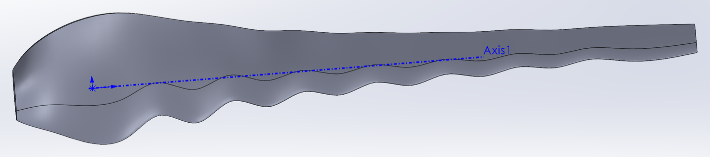
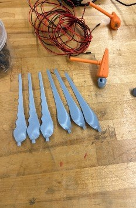
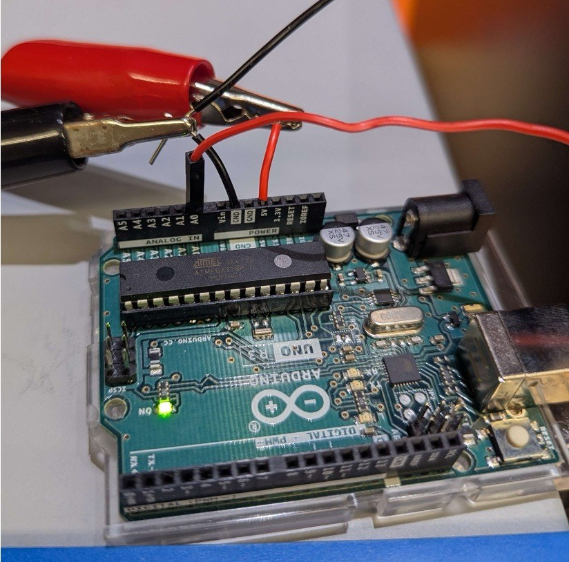
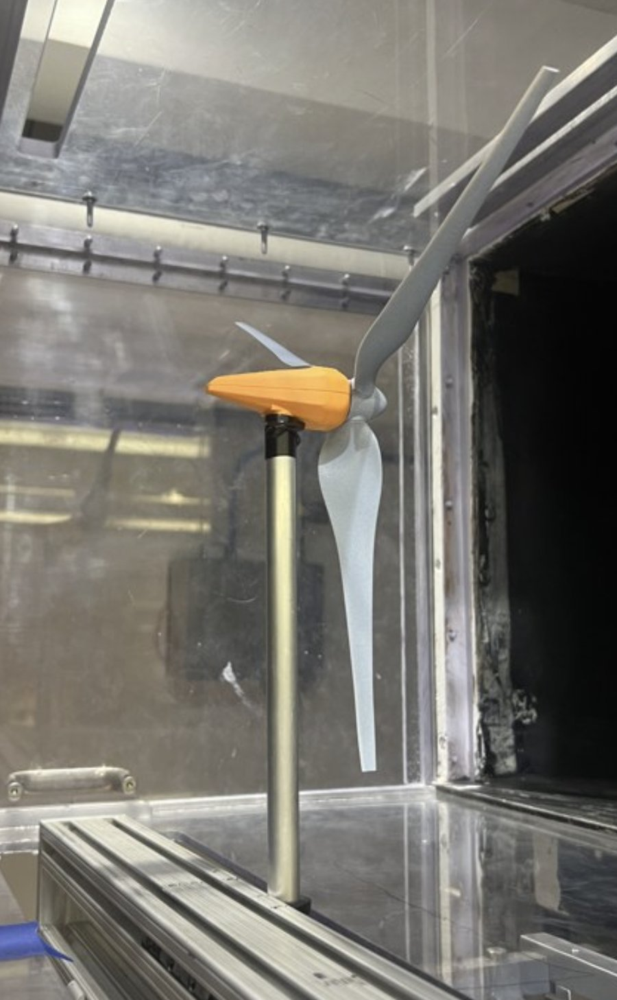

Background
- Hydrodynamic tubercles on humpback fins increase performance by generating streamwise counter-rotational vortex pairs that energize the boundary layer, delaying flow separation and maintaining lift at higher angles of attack while reducing pressure drag associated with stall.
- Tubercles have been found to increase lift in humpback whale pectoral fins by 10–15%.
- Tubercle technology for wind turbines has been commercialized, but its effect near cut-in speed, where a turbine begins producing power, is less explored.
- Residential wind turbines routinely underperform at low wind speeds, resulting in significant energy losses. Closing that performance gap could increase small wind turbine uptake by households and local grids.
- Hypothesis: leading-edge tubercles increase power output near cut-in speed by at least 5%.
Design and Modeling
- Modeled the control blade from a NACA 63-215 airfoil at 10 spanwise sections, lofted in SolidWorks, with a 1.82% shim added for manufacturability.
- Wrote a VBA macro to export 100 leading-edge points to CSV, then applied sinusoidal leading-edge offsets in MATLAB to generate the NACA 63-215 tubercle blade.
- Interpolated chord length and twist angle as functions of radius in MATLAB, then built peak, neutral and trough cross-sections at 14% peak-to-peak amplitude and lofted them in SolidWorks.
- Held tubercle blade surface area and volume within ±0.25% and ±0.146% of the control blade to ensure a controlled comparison.





Simulation
- Performed FEA and CFD simulations in Siemens NX to evaluate structural and aerodynamic performance, correlating results with test data.
Fabrication and Testing
- Sliced and 3D-printed control and tubercle blade sets by FDM (Prusa MK4) and SLA (J35), with a tight-fit hub requiring no adhesive for clean blade swaps between runs.
- Built the turbine assembly, designing the nacelle around the generator motor and mounting the turbine on an 80/20 rail system in the wind tunnel.
- Ran global interference checks on the full assembly before printing, and confirmed structural integrity at tunnel speeds with centrifugal force calculations and tests.
- Test rig instrumented with an Arduino measuring generator voltage through a voltage divider (2 × 620 Ω, keeping output within the Arduino’s 5 V range), a retroreflective tachometer for RPM, and a U-tube manometer to verify tunnel velocity; processed data in MATLAB.
- Co-developed the test protocol and conducted wind tunnel testing that verified the power increase.
- Compared mean output between blade sets with 95% confidence intervals.



Results
- Wind tunnel testing verified a 30% increase in power output at low Reynolds numbers near cut-in speed, exceeding the 5% target.
- Awarded Best Fluids Design Project, Mechanics Laboratory (ME 241).